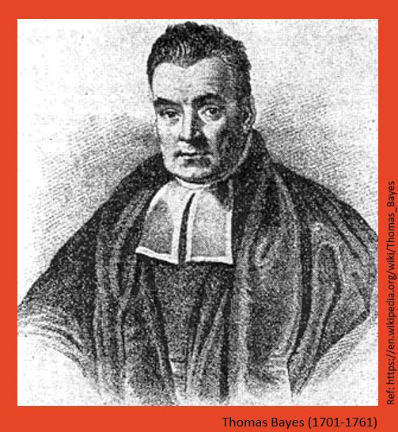

Week 1: Navigating Evidence
Learnings
- Outcomes
– LO1: Explain the difference between Bayesian and frequentist concepts of statistical inference.
– LO5: Engage in specifying, checking and interpreting Bayesian statistical analyses in practical problems using effective communication with health and medical investigators.
- Objectives
In today’s lecture we will:
– Understand Bayesian philosophy.
– Describe the motivation of doing Bayesian analysis.
– Understand the difference between Bayesian and classical statistical methods.
– Interpret a real-life problem in Bayesian context.
Background
Thomas Bayes, who is remembered through the term “Bayesian”, passed away in 1761 without having the chance to formally present or publish his groundbreaking findings. Two years after his death, it was Richard Price who, in 1763, introduced Bayes’ extraordinary work to the Royal Statistical Society. Bayes had been developing a probabilistic framework to tackle inverse problems. Later, Richard Price (1723–1791) and Pierre-Simon Laplace (1749–1827) played crucial roles in advancing and applying this transformative idea to practical real-world scenarios.
To fully understand the Bayesian framework, it is essential to become familiar with several key terms commonly used in Bayesian discussions, such as Bayesian inference, prior, posterior, and Bayesian modelling. Throughout this course, we will gradually explore and learn these fundamental concepts.
Before that, let’s start understanding the Bayesian philosophy.
Bayesian Philosophy
Bayesian philosophy revolves around the concept of “degrees of belief” in scientific reasoning. But what does that actually mean? Simply put, it views probability as a measure of our confidence in an event, which updates as we gather new evidence. Unlike traditional frequentist statistics, which treat probability as an objective, fixed value, Bayesian thinking sees it as a dynamic, subjective measure that evolves with new data and insights.
Let’s explain a bit more using examples:
Suppose a medical practitioner is treating a patient who might have a particular illness, like type-2 diabetes. Initially, based on the patient’s age, family history, and some initial symptoms, the medical practitioner might believe there’s a 20% chance the patient has diabetes. This belief is a prior probability.
Now, the medical practitioner orders a blood test to check the patient’s blood sugar levels. When the results come back, they show elevated sugar levels, which increase the likelihood of diabetes. The medical practitioner updates their belief based on this new evidence, which is called the posterior probability.
So, Bayesian philosophy evolves starting with an initial belief (prior), and then updating that belief as new data (like test results) comes in. In short, it’s a flexible way of thinking where beliefs are adjusted as information is acquired.
The Maze
Bayesian analysis is a logical framework that helps update our beliefs based on continuous new information. A helpful analogy is navigating a maze with an incomplete map. Each step provides new clues, and with every clue, your understanding of the maze improves. By continuously updating your knowledge with new information, you eventually find the exit. This is how Bayesian analysis works, it continuously updates our understanding as more evidence comes in.
To see this in practice, let’s consider an example explained below.
Example
A medical practitioner had seen many cases of pneumonia before, but this one was tricky. A 55-year-old patient, had been admitted with high fever, cough, and shortness of breath. Based on his symptoms and an initial chest X-ray, the practitioner diagnosed him with bacterial pneumonia and started him on a standard antibiotic.
At this point, their belief was strong that the chosen antibiotic would work, this was their prior probability based on past experience.
Day 2:
After 24 hours, the patient wasn’t improving. Thier fever remained high, and their breathing was still labored.
The practitioner now had new evidence, the treatment wasn’t working as quickly as it should. Applying Bayesian reasoning, they adjusted their belief:
The probability that this was a typical bacterial pneumonia responding to first-line antibiotics decreased.
The probability that it was a resistant strain of bacteria or even a different type of infection increased.
They needed more information.
Day 3:
The practitioner ordered a sputum culture to check for antibiotic-resistant bacteria. In the meantime, they updated the treatment, switching the patient to a broader-spectrum antibiotic.
If the new antibiotic worked, it would confirm that the initial one was ineffective, meaning resistant bacteria were likely the cause.
If the patient still didn’t improve, it could mean this wasn’t bacterial pneumonia at all, it might be a viral infection instead.
Again, their belief about the cause of the patient’s illness shifted based on new evidence.
Day 4:
The test results came in: The patient’s infection was caused by a drug-resistant strain of bacteria. This confirmed that the initial choice of antibiotics was ineffective.
With this new evidence, the practitioner’s belief was now much stronger that the broader-spectrum antibiotic was the right choice.
The Lesson of Bayesian Thinking
The medical practitioner didn’t just rely on their initial belief. Instead, they continuously updated their understanding as new evidence emerged, just like someone navigating a maze learns from every wrong turn. This process demonstrates how Bayesian reasoning helps in making data-driven, logical decisions, not just by guessing, but by continuously refining our beliefs with new information, ultimately leading to the best possible decision.
Concepts: Classical vs. Bayesian
Throughout this course, we will provide relative comparisons of frequentists and Bayesian statistical methods, using examples. Let us now explain some key conceptual aspects of these two approaches.
History:
The origins of Bayesian statistical inference trace back to the late 18th century, predating many modern methodologies. Its use continued into the 19th century, but after World War I, statisticians like Sir Ronald Fisher, who opposed Bayesian concepts, contributed to its decline. Fisher’s 1925 statistical handbook briefly mentioned Bayesian analysis, then known as “inverse probability”, further pushing it to the margins of mainstream statistics. However, in the latter half of the 20th century, Bayesian methods gradually regained acceptance. This resurgence was particularly driven by advancements in computational technology during the 1990s, which greatly expanded their practical applications.
Data and Parameter:
Data represents known elements, whereas parameters are unknown quantities inferred from data. Within the Bayesian framework, this distinction becomes less clear; a variable may be either observed or unobserved, yet it is governed by the same distribution function. Consequently, an assumption can serve as a “likelihood” or a “prior” depending on the context, without altering the model. This connection between certainty (data) and uncertainty (parameters) facilitates the management of measurement errors and missing data in modeling.
Reliable Inference:
There exists a notion that a specific number of observations is necessary for reliable statistical estimates. For example, at least 30 observations are typically required for a Gaussian distribution. This notion is rooted in traditional statistical inference, where methods are validated for large sample sizes, a concept known as asymptotic behavior.
Conversely, Bayesian estimates remain valid regardless of sample size. While larger samples are advantageous, Bayesian methods provide meaningful results even with limited data. However, they necessitate a careful selection of the “prior,” which significantly influences the final inference. An improperly chosen prior can skew conclusions. Understanding the world demands thoughtful consideration, without resorting to shortcuts.
Role of Data:
The distinctions between Bayesian and non-Bayesian methodologies are notable, yet these differences can sometimes overshadow their underlying commonalities. In many Bayesian and non-Bayesian models, the most critical assumptions typically concern the likelihood functions and their connections with the parameters. These assumptions guide the inferences drawn from each dataset. As the sample size grows, the significance of the likelihood increases. This shared emphasis on likelihood clarifies why Bayesian and non-Bayesian inferences frequently yield similar results.
Furthermore, a common misunderstanding regarding Bayesian data analysis and inference is the belief that they are exclusively defined by Bayes’ theorem. Any inferential method employing probability theory incorporates Bayes’ theorem. Numerous examples labeled as “Bayesian” often lack distinctive attributes and instead rely on observed data frequencies, resembling non-Bayesian methods. The distinctiveness of Bayesian techniques lies in their application of Bayes’ theorem to measure the uncertainty associated with theoretical constructs not directly observable, such as parameters and models. Both methodologies can produce robust inferences, although they are grounded in different principles and entail unique trade-offs.
Example
Imagine a scenario where we have a sample from a clinical trial and want to test whether a drug is effective in treating a disease. We have 50 patients in each group, and the treatment shows that 30 out of 50 recovered, and in the control group, 10 out of 50 recovered. In this scenario, we can easily apply a frequentist proportion test and obtain a p-value of 0.0001. This result allows us to reject the null hypothesis and conclude that the treatment and control groups have significantly different recovery rates.
Now, we implement the Bayesian approach to this data and observe that the probability that the treatment recovery rate exceeds the placebo recovery rate is very high, approximately 1. In this moderate-sample scenario, both the frequentist and Bayesian approaches lead to similar conclusions (depending on the type of frequentist test, i.e., one-tailed or two-tailed).
Now, to demonstrate where the Bayesian method is can be more advantageous than the frequentist method, let’s consider a scenario with limited data. The Bayesian approach can make use of prior knowledge, whereas the frequentist method relies purely on the data at hand. In situations with small sample sizes or limited data, the Bayesian method can give more insightful results.
Consider, instead of 50 patients, we have data from 5, and want to test whether a drug is effective in treating the disease. So, we have only 5 patients, and the treatment shows that 3 out of 5 recovered. In the control group, 1 out of 5 recovered.
From a frequentist point of view, this scenario is difficult to assess because the data is very sparse. Even if we conduct a hypothesis test assuming the null hypothesis \(H_0\) that the treatment and control groups have the same recovery rate, we obtain a p-value of 0.52 (using a proportion test, which you have learned in an introductory statistics course). This high p-value means we fail to reject the null hypothesis, suggesting no significant difference between the treatment and control recovery rates.
In Bayesian approach, we combine the sparse data with prior knowledge, yielding more stable and informative results, even when using no particular knowledge about any prior belief (i.e., using a non-informative prior, which we will discuss later in this unit).
Now, based on the posterior samples of the treatment and placebo recovery rates and knowing that no prior information about the recovery rates, we find the probability that the treatment recovery rate is higher than the placebo recovery rate is approximately 0.882.
The Bayesian results we have discussed above for the samll sample scenario assumed no historical knowledge or prior information about the effectiveness of either the treatment or control groups (i.e., a non-informative prior). Now, suppose we know from historical data that the control group has a recovery rate of about 70%. Incorporating this prior information into the Bayesian framework, we find that the probability of the treatment recovery rate being greater than the control group’s rate is 0.58. Whereas, for frequentist, there is no way that we can incorporate this information!
–
Imagine a scenario where we have data from a clinical trial and want to test whether a drug is effective in treating a disease. There are 50 patients in each group. In the treatment group, 30 out of 50 recovered, while in the control group, 10 out of 50 recovered. In this case, we can easily apply a frequentist proportion test and obtain a p-value of 0.0001. This result allows us to reject the null hypothesis and conclude that the treatment and control groups have significantly different recovery rates.
Now, applying a Bayesian approach to the same data, we observe that the probability that the treatment recovery rate exceeds the placebo recovery rate is very high, approximately 1. In this moderate-sample scenario, both the frequentist and Bayesian approaches lead to similar conclusions (depending on the type of frequentist test, i.e., one-tailed or two-tailed).
To demonstrate a scenario where the Bayesian method may offer advantages over the frequentist method, let’s consider a case with limited data. The Bayesian approach allows us to incorporate prior knowledge, while the frequentist method relies solely on the observed data. In situations with small sample sizes, the Bayesian method can produce more insightful and stable results.
Suppose, instead of 50 patients, we only have data from 5. In this case, the treatment group shows that 3 out of 5 patients recovered, and the control group shows that 1 out of 5 recovered.
From a frequentist perspective, this scenario is difficult to assess due to the limited data. Even if we conduct a hypothesis test under the null hypothesis \(H_0\) that the treatment and control groups have the same recovery rate, we obtain a p-value of 0.52 (using a proportion test, as introduced in an introductory statistics course). This high p-value leads us to fail to reject the null hypothesis, suggesting no significant difference between the treatment and control groups.
Whereas, the Bayesian approach combines the sparse data with prior knowledge, producing more stable and informative results, even when using no specific prior beliefs (i.e., a non-informative prior, which we will discuss later in this unit).
Based on posterior samples of the treatment and placebo recovery rates, and assuming no prior information about those rates, we find that the probability of the treatment recovery rate being higher than the placebo recovery rate is approximately 0.882.
The Bayesian results we discussed above for the small-sample scenario were no historical knowledge or prior beliefs were incorporated. Now, suppose we do have historical data suggesting that the control group typically has a recovery rate of about 70%. Incorporating this prior information into the Bayesian framework, we find that the probability of the treatment recovery rate being greater than the control group’s rate drops to 0.58. Whereas, the frequentist method provides no way to incorporate such prior information.
In brief, Bayesian Method incorporates prior knowledge (such as known rates from similar treatments of the diseases), improving estimates even with small sample sizes. Instead of a single p-value, Bayesian analysis gives a full posterior distribution, providing a richer interpretation of the uncertainty in the treatment’s effectiveness. Finally, Bayesian approach is less affected by small sample sizes, as it uses prior distributions and provides more stable estimates.
We will discuss more on the distributional aspect in our next lecture. Before that we explain the Bayesian theorem using probabilities.
Dual-Factor Probabilities
Kruschke (2014)
Bayesians do not imagine repetitions of an experiment in order to define and specify a probability. Probability is merely taken as a measure of certainty in a particular belief. This implies that the probability is used as a way to quantify how certain we are about a belief or an event happening. Before diving into Bayes’ theorem, let’s first understand some key concepts in probability distributions, which I assume you have already learned in the PSI unit.
There are many situations in which we are interested in the conjunction of two outcomes. As a specific example for developing these ideas, consider a situation where the probabilities of various combinations of people’s eye color and hair color. The data come from a particular convenience sample (Snee, 1974), and are not meant to be representative of any larger population.
The above Table considers four possible eye colors, listed in its rows, and four possible hair colors, listed across its columns. In each of its main cells, the table indicates the joint probability of particular combinations of eye color and hair color. For example, the top-left cell indicates that the joint probability of brown eyes and black hair is 0.11 (i.e., 11%). Notice that not all combinations of eye color and hair color are equally likely. For example, the joint probability of blue eyes and black hair is only 0.03 (i.e., 3%).
We may be interested in the probabilities of the eye colors overall, collapsed across hair colors. These probabilities are indicated in the right margin of the table, and they are therefore called marginal probabilities. They are computed simply by summing the joint probabilities in each row, to produce the row sums. For example, the marginal probability of green eyes, irrespective of hair color, is 0.11. The joint values indicated in the table do not all sum exactly to the displayed marginal values because of rounding error from the original data.
We often want to know the probability of one outcome, given that we know another outcome is true. For example, suppose I sample a person at random from the population. Suppose I tell you that this person has blue eyes. Conditional on that information, what is the probability that the person has blond hair (or any other particular hair color)? It is intuitively clear how to compute the answer: We see from the blue-eye row of the above Table that the total (i.e., marginal) amount of blue-eyed people is 0.36, and that 0.16 of the population has blue eyes and blond hair. Therefore, of the 0.36 with blue eyes, the fraction 0.16/0.36 has blond hair. In other words, of the blue-eyed people, 45% have blond hair.We also note that of the blue-eyed people, 0.03/0.36 = 8% have black hair.
Bayes’ Theorem
Let’s now go back to the example related to type-2 diabetes, where, a medical practitioner hypothise based on patient’s background history that the patient has a chance of having diabetes.
Thus, we have two events:
- The hypothesis that medical practitioner’s guess is correct \((G=[+])\).
- The evidence: Blood test showing elevated sugar levels \((E=[+])\).
Now, given this experimental evidence of elevated blood sugar, how sure are the medical practitioner that their guess about the diabetes is accurate?
\[ Pr(\text{Guess is correct} | \text{Positive evidence}) = \text{ ?} \]
Hence, using conditional probability expression we write:
\[ Pr(\text{G=[+]}|\text{E=[+]}) = \frac{Pr(\text{G=[+]},\text{E=[+]})}{Pr(E=[+])} \]
where, \(Pr(\text{G=[+]},\text{E=[+]})\) is the joint probabiity that both \((G=[+])\) and \((E=[+])\) occur. We can rearrange and write the joint probability as:
\[ Pr(\text{G=[+]},\text{E=[+]}) = Pr(\text{G=[+]})\times Pr(\text{E=[+]}|\text{G=[+]}) \]
Hence, by substituting the joint probability the Bayes theorem states:
\[ Pr(\text{G=[+]}|\text{E=[+]}) = \frac{Pr(\text{G=[+]})\times Pr(\text{E=[+]}|\text{G=[+]})}{Pr(E=[+])} \]
where, \(Pr(E=[+])\) is the marginal probability for the blood test showing high suger levels for all possible hypotheses, here, the possible hypotheses are: \(G=[+]\) and \(G=[-]\). Hence, we write \(Pr(\text{G=[+]}|\text{E=[+]})\) as:
\[ \frac{Pr(\text{G=[+]})\times Pr(\text{E=[+]}|\text{G=[+]})}{Pr(\text{G=[+]})\times Pr(\text{E=[+]}|\text{G=[+]})+Pr(\text{G=[-]})\times Pr(\text{E=[+]}|\text{G=[-]})} \]
where, \(Pr(\text{G=[+]})\) and \(Pr(\text{G=[-]})\) are the probabilities of the medical practitioner’s guess is correct and incorrect respectively, thus we write \(Pr(\text{G=[-]}) = 1-Pr(\text{G=[+]})\) or vise versa.
We clearly see that the degree of belief probability after including the evidence is equal to the probability of guess before incorporating the evidence and probability of the evidence with the medical practitioner’s guess.
Example
To explain the above example we write, \(Pr(\text{G=[+]})=0.2\), as the medical practitioner guessed that there is a 20% chance the patient has diabetes. The complement, the probability that the patient does not have diabetes, is \(Pr(\text{G=[-]})=0.8\).
Now, let us define the test’s accuracy:
Sensitivity (True Positive Rate or Hit Rate): \(Pr(\text{E=[+]}|\text{G=[+]})=0.85\), i.e., 85% of diabetics test positive.
Specificity (True Negative Rate): \(Pr(\text{E=[-]}|\text{G=[-]})=0.90\), i.e., 90% of non-diabetics test negative.
False Positive Rate (False Alarm): \(Pr(\text{E=[+]}|\text{G=[-]})=1-Pr(\text{E=[-]}|\text{G=[-]})=1-0.9=0.10\), i.e., 10% of non-diabetics test positive.
The question is: Given that the test result is positive, how sure is the medical practitioner that the patient truly has diabetes?
This is expressed as the posterior probability , which we compute using Bayes’ theorem:
\[ Pr(\text{G=[+]}|\text{E=[+]}) = \frac{(0.2\times 0.85)}{(0.2\times 0.85) + (0.8\times 0.1)} = 0.68 \]
After observing a positive blood sugar test, the probability that the patient has diabetes increases from 20% to 68%. This means the medical practitioner is now 68% confident in their updated belief that the patient has diabetes.
Summary
The key concept of this week’s lecture is that Bayesian ways of thinking are inherently more suited to solving real-life problems compared to frequentist/classical approaches, as they allow for the inclusion of prior information in decision-making, providing a clear advantage in calculating inverse probability.
Live tutorial and discussion
The final learning activity for this week is the live tutorial and discussion. This tutorial is an opportunity for you to to interact with your teachers, ask questions about the course, and learn about biostatistics in practice. You are expected to attend these tutorials when possible for you to do so. For those that cannot attend, the tutorial will be recorded and made available on Canvas. We hope to see you there!
Tutorial Exercises
Solutions will be provided later after the tutorial.